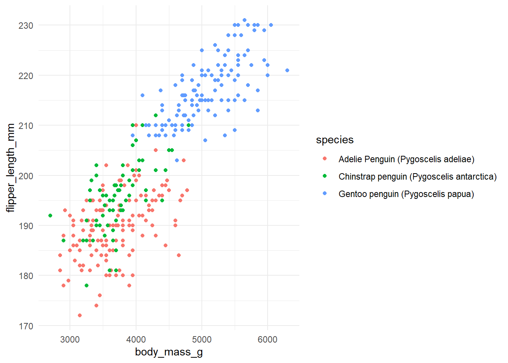
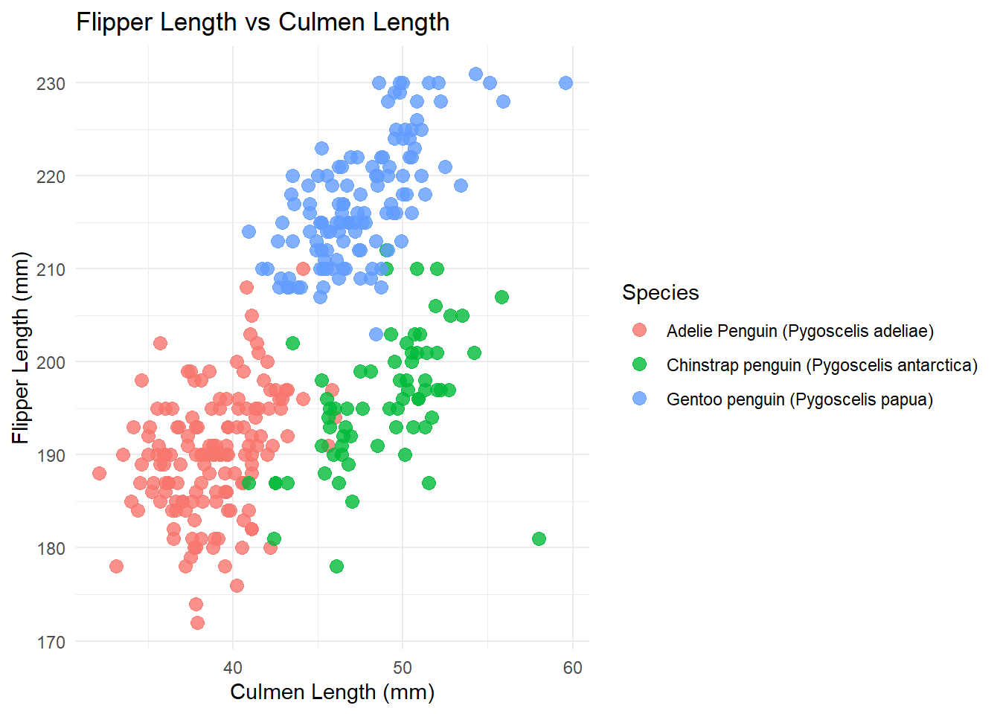

Penguins Vis
Penguins are cool!
Penguins have been peoples fascinations for millennial. I strive to provide visuals of their anatomy, population, and the inner workings of correlation to one another.
This data was introduced and provided to me through the CS 201 Introduction to R class. As I have worked with this data set for almost 8 weeks, I have gotten very familiar with it and had much practice with it regarding Data Vis.
I chose this data due to my own strengths and familiarity with the data itself. I also genuinely find penguins interesting, especially their anatomy and inability to fly.
This is the Penguins’ data:
This graph illustrates the relationship between body mass of penguins and their flipper length. As we all know, a smaller p-value means that there is less chance the data is random. Thus, looking at these points on the graph, there is a high chance these relationships are related and not random.
This second data visualization shows the positive correlation of culmen length and flipper length. Again, the p-value is minute, thus these correlations are more likely to be random, rather than related.

This last visualization expresses the strong relationship between the species of penguin and their habitat (island).